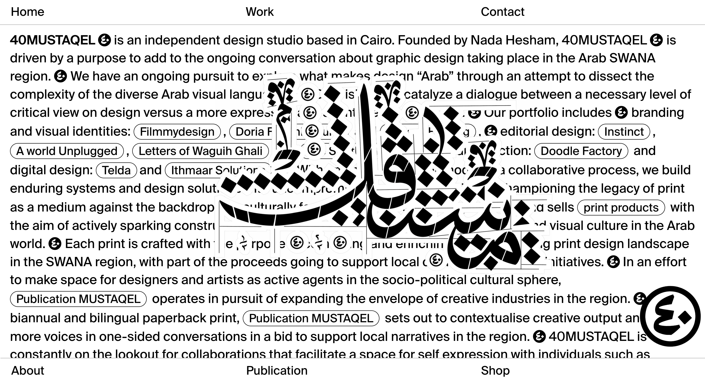
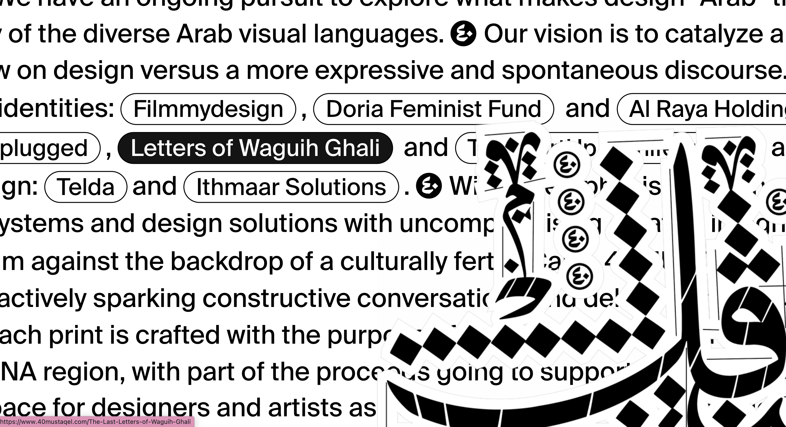
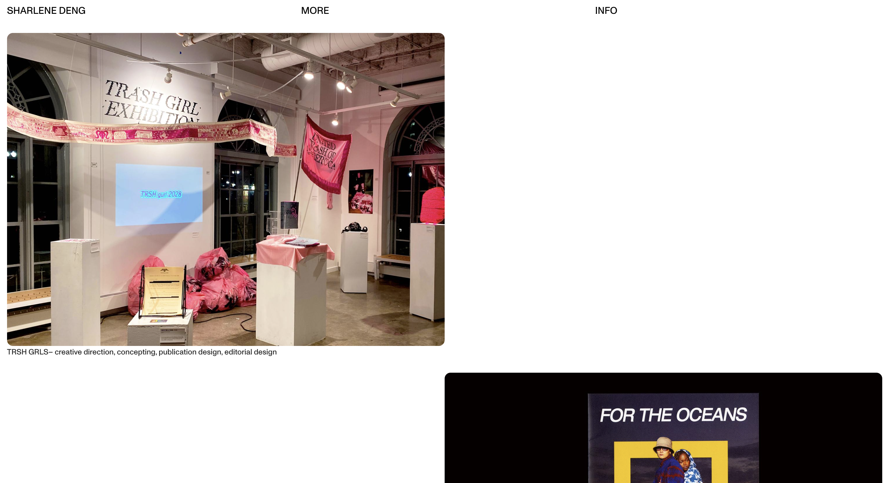

Project 4: Index
Write-Up
by Ecem Ozturk
Interactive Media:Web 501
OCAD Winter 2024
Browser Based Portfolio Design is Important
Portfolios represent identities of artists, designers, architects, graphic designers, actors, even writers. Every creative profession has an element of ‘showreel’, a portfolio with example works. This compilation should be a summary of you as a person, and you as a professional. In a time where there is a surge in professionals but not enough gigs, differentiating ourselves through self-discovery plays an important role. Not just for the sake of putting our name on the map, but also for the sake of developing a presentation language coherent with our work.
Craftsmanship and original ideas, when implemented in the webspace, gives out exceptional experiences that are memorable. Following are portfolios chosen because of their unique use of text, media and links.
40MUSQATEL
40MUSQATEL.com  40MUSQATEL is an independent design studio based in Cairo. The first thing that stands out on their website is the calligraphy-style type in the middle that can be moved with the mouse. This feature creates an interactive and engaging experience for visitors, especially for those unfamiliar with the Arabic alphabet. It's a bold mashup of traditional art with contemporary representation, showcasing the studio's innovative approach to design. In the backdrop we see the projects linked and mentioned in a text written in bold, almost covering the whole welcome page. This directs the user to engage with the text and skim through the words.
Sharlene Deng
sharlenedeng.com Sharlene Deng is a designer whose website showcases her portfolio and projects. It features her work, design philosophy, and a blog for personal insights into her design process. The individual projects are presented in a manner that gives breathing room for each individual project, and space to focus to each one. With each click, you can switch between different photos belonging to the same project. Sharlene’s unique photography and designs is presented through a stream of images, in a tumblr-wise manner, which is a portfolio layout familiar to eyes.
Sujets Objets
sujets-objets.ch
Sujets Objets is a design studio, with its website showcasing design projects and products. The website URL suggests a focus on subjects and objects, which could indicate a range of design topics or a specific design philosophy. The welcome page is a tower of media layering. On the back drop there is a video shot playing in a loop. The foreground is a list of project links. Each link adds a layer to the structure of a picture of the project when hovered, and when clicked opens the project page. The page is always crowded with many details, almost each second the viewer’s eyes drift on the page from point to point. With each new media layered, as a result of hovering the cursor, there is a new window to be payed attention to. This feels like a reference to the underground culture of Europe where we see security camera shots and rapid photogrammetry at play.
The amount of interaction varies for each case presented here. Its a question the owner of the website has to ask itself, in terms of how to present the content presented. The process of designing the website itself should be a testament to the designer’s own design processes. Which introduces an element of narration to the portfolio, and takes it further than a archive to an experience. This is the case with sujet-objets’ way of using provocative media footages to build its identity. 40MUSQATEL does it through effective graphic design, to build a protest identity.

press to go back to the index!